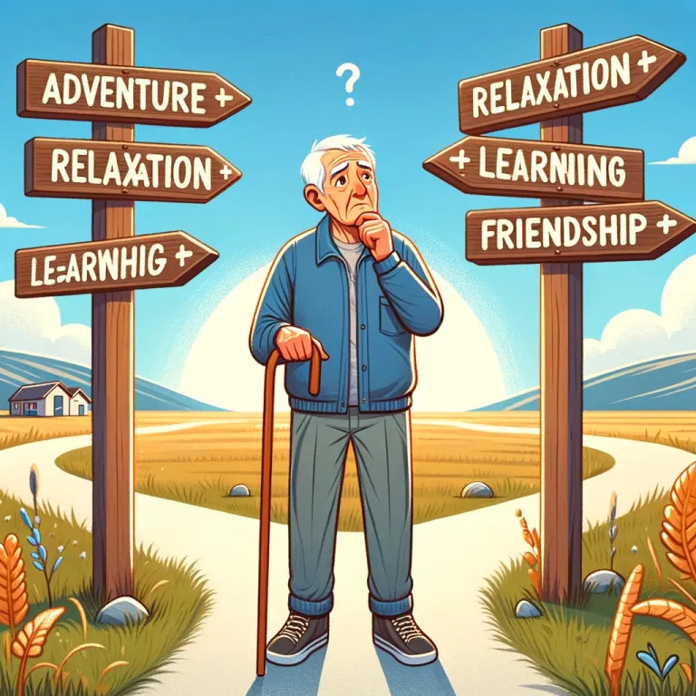

|
<< Click to Display Table of Contents >> Navigation: »No topics above this level« Ein langer Weg ... |

Der Weg mit Smalltalk begann irgendwann in den 1980ziger, mit einem Atari ST, einem Besuch einer Atari-Messe in Düsseldorf und ein zufälliges Finden eines Ausstellers dort: Georg Heeg. Dieser zeigte auf dem Stand eine Portierung von ObjectWorks von ParcPlace ... und ich verstand nichts.
Es folgten in den nächsten 10 Jahren VisualSmalltalk, VisualWorks und um die 1997 dann auch VASmalltalk von IBM.
Natürlich mit dBase, dann mit DB2/2, Adabas-D, PostgreSQL und dann ab 1997 mit ARGOS (VisualWorks/Versant) die erste objektorientierte Datenbankerfahrung. Technisch interessant, aber das Produkt hatte nur eine Lebensdauer von ca. 5 Jahren - da sah man sich gezwungen, eine Ablösung zu entwickeln. Es folgte ein kurzer Ausflug mit der NO-SQL Datenbank CouchDB, die aber um 2010 noch nicht produktionsreif war (wie ich selber schmerzhaft feststellen musste).
Seit ca. 2005 mit eigener IN-RAM Datenbank unterwegs, die unter C# eine automatische Persistenz des Objektmodells ermöglichte und ein unkompliziertes Programmiermodell ermöglichte ...
Mit ARGOS (s.o.) wurde das zugrundeliegende persistente Objektmodell erstmals in den Entwicklungstools grafisch definiert, Oberflächen wurden erzeugt und notwendiger Code für Persistenz wurde automatisch erzeugt - alles in Smalltalk. Das hat den Entwicklungstil seit 1997 extrem geprägt.
Mit Umstieg auf C# haben wir uns einen eigenen Modellierer und CodeGenerator geschrieben: PUM (Poor Users Modeller).
Seit den neunziger Jahren geisterte - in Publikationen, Postings etc - ein Datenbankprodukt umher, von dem man sich sehr spannende Sachen erzählte: Gemstone/S. Eine komplette objektorientierte Datenbank, headless für den Serverbetrieb und mit einem verteilten Programmiermodell ausgerüstet: primär in Zusammenhang mit VASmalltalk und VisualWorks.
Aber der Zugriff auf dieses Produkt war schwierig und sehr teuer: teurer als eine Oracle Datenbank und das will was bedeuten! Das änderte sich erst in den frühen 201x-Jahre herum, als es kostenlose Schnupperversionen gab und man endlich mal etwas ausprobieren konnte. Das Produkt wurde greifbar.
Um 2014 herum wurde in unseren Firmen immer wieder diskutiert, in welche Richtung die Softwareentwicklung gehen sollte und einige Eckpunkte waren schnell klar:
•API orientierte Entwicklung
•Oberfläche im Browser, wenn das möglich ist und in HTML5
Angefacht wurde diese Diskussion durch das Herumschlingern bei Microsoft über einige Jahre bei den eigenen UIs. Wir entschieden uns für das damals einzige gute Javascript-Produkt auf dem Markt: Sencha ExtJS.
API Entwicklung bedeutete prinzipiell REST, OpenAPI gab es noch nicht und der Vorläufer davon hieß "Swagger".
Die Frage der Persistenz wurde nicht abschließend beantwortet, so daß alle Möglickeiten in Frage kamen - solange man halt mit API-Aufrufen auf die Datenhaltung zugreifen konnte.
Auch bei den zu nutzenden Programmiersprachen hat man sich nicht festgelegt - da man ja ein http/REST System erwartete.
Mit diesen Vorgaben konnte auch Gemstone/S als Kandidat angesehen werden, und 2014/2015 wurde das erste Gemstone-Projekt mit diesen Vorgaben erfolgreich durchgeführt.